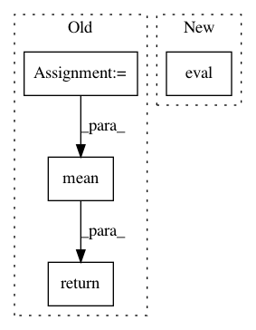

70b15bde1d8a1b29d24f23bac1a28a63be0fb4d2,torchsample/modules/super_module.py,SuperModule,evaluate_loader,#SuperModule#Any#,223
Before Change
def evaluate_loader(self, loader):
nb_batches = int(math.ceil(len(loader.dataset.inputs)/loader.batch_size))
losses = torch.FloatTensor(nb_batches)
for batch_idx, (x_batch, y_batch) in enumerate(loader):
x_batch = Variable(x_batch)
y_batch = Variable(y_batch)
y_pred = self(x_batch)
loss = self._loss(y_pred, y_batch)
losses[batch_idx] = loss.data[0]
return torch.mean(losses)
def save(self, file):
Save a model to disk
After Change
return loss
def evaluate_loader(self, loader):
self.eval()
total_loss = 0.
total_samples = 0.
for batch_idx, (x_batch, y_batch) in enumerate(loader):
x_batch = Variable(x_batch)
In pattern: SUPERPATTERN
Frequency: 3
Non-data size: 4
Instances
Project Name: ncullen93/torchsample
Commit Name: 70b15bde1d8a1b29d24f23bac1a28a63be0fb4d2
Time: 2017-04-20
Author: ncullen@modv-vlan533.0018.apn.wlan.med.upenn.edu
File Name: torchsample/modules/super_module.py
Class Name: SuperModule
Method Name: evaluate_loader
Project Name: masa-su/pixyz
Commit Name: bea3a486261d3f6238316224605b684db1e5bca7
Time: 2018-10-16
Author: masa@weblab.t.u-tokyo.ac.jp
File Name: Tars/models/ml.py
Class Name: ML
Method Name: test
Project Name: adalca/neuron
Commit Name: 2019b3cae62bdb7740e93b0820fb25692c955cd6
Time: 2017-03-16
Author: adalca@mit.edu
File Name: src/pytools/metrics.py
Class Name: weighted_categorical_crossentropy
Method Name: loss